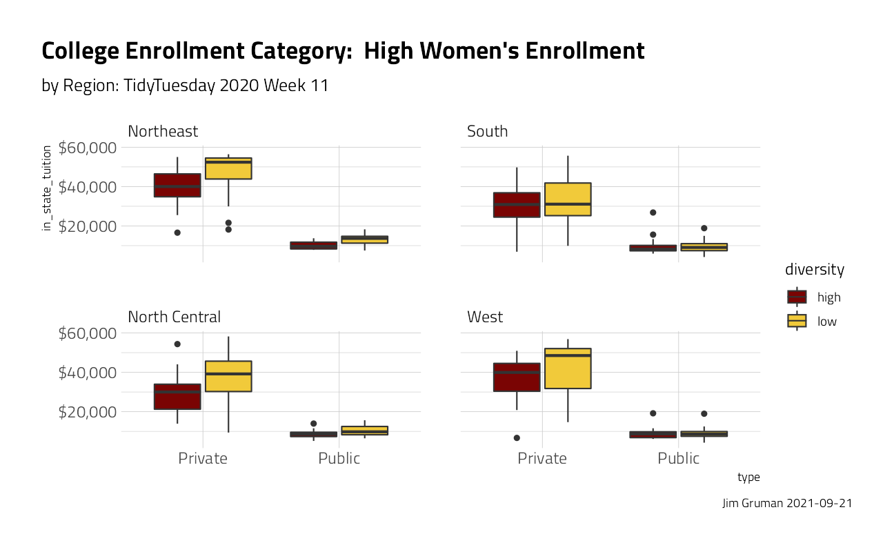
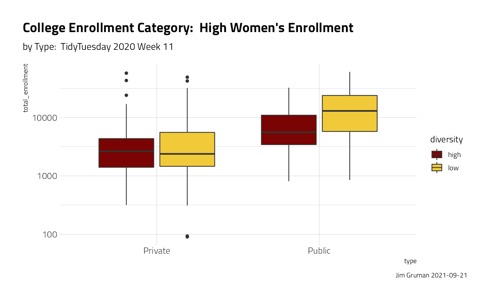
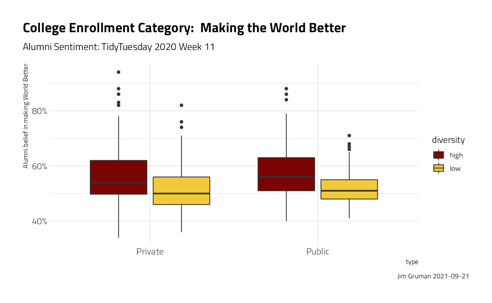
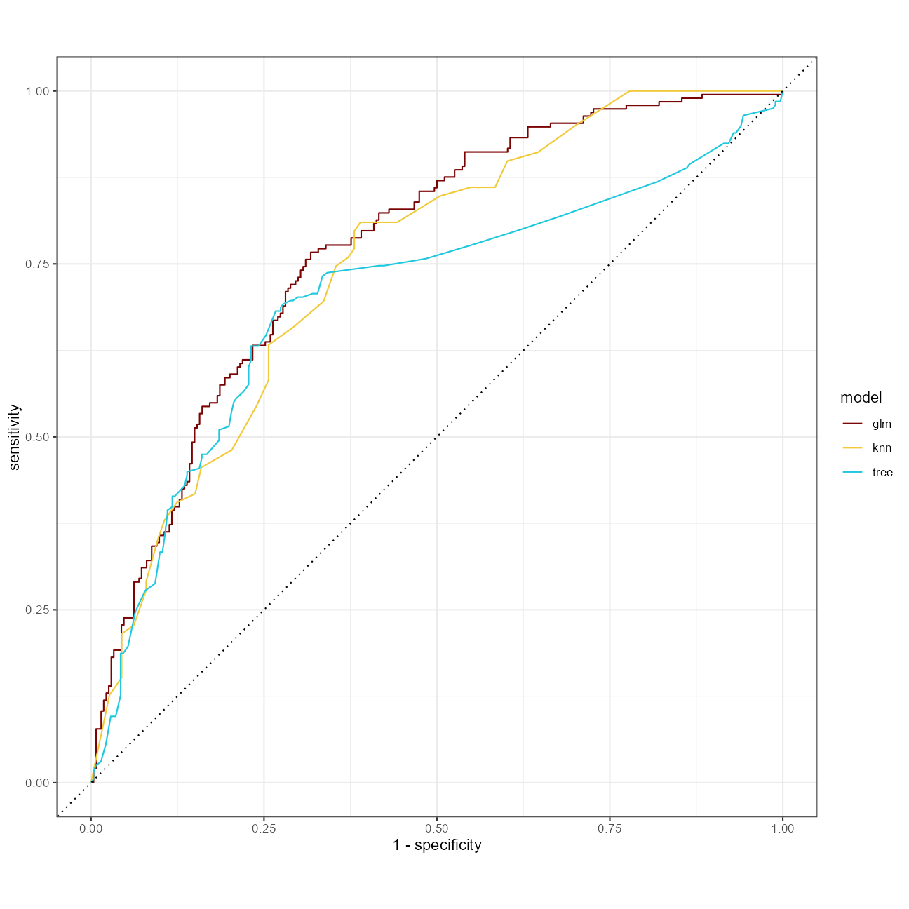
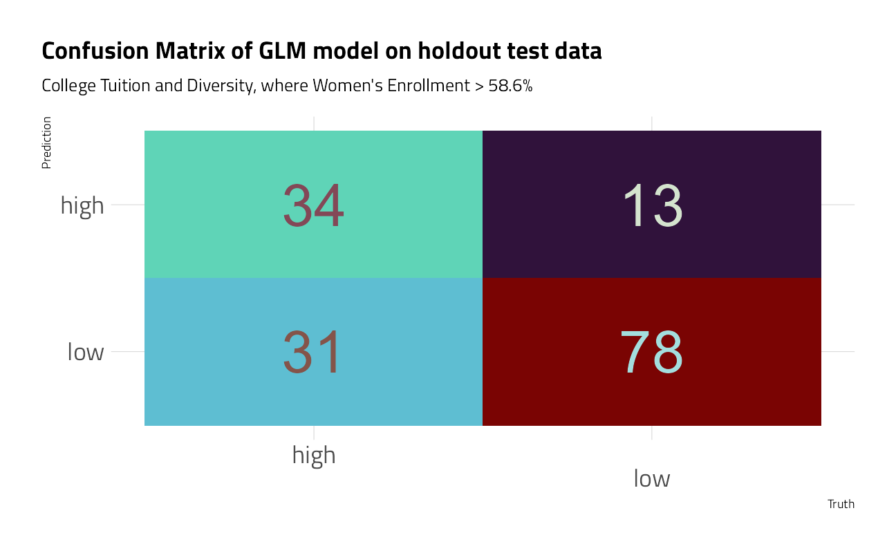

College Tuition and Diversity
Jim Gruman
March 10, 2020
Last updated: 2021-09-21
Checks: 7 0
Knit directory: myTidyTuesday/
This reproducible R Markdown analysis was created with workflowr (version 1.6.2). The Checks tab describes the reproducibility checks that were applied when the results were created. The Past versions tab lists the development history.
Great! Since the R Markdown file has been committed to the Git repository, you know the exact version of the code that produced these results.
Great job! The global environment was empty. Objects defined in the global environment can affect the analysis in your R Markdown file in unknown ways. For reproduciblity it’s best to always run the code in an empty environment.
The command set.seed(20210907) was run prior to running the code in the R Markdown file. Setting a seed ensures that any results that rely on randomness, e.g. subsampling or permutations, are reproducible.
Great job! Recording the operating system, R version, and package versions is critical for reproducibility.
Nice! There were no cached chunks for this analysis, so you can be confident that you successfully produced the results during this run.
Great job! Using relative paths to the files within your workflowr project makes it easier to run your code on other machines.
Great! You are using Git for version control. Tracking code development and connecting the code version to the results is critical for reproducibility.
The results in this page were generated with repository version b37dbc1. See the Past versions tab to see a history of the changes made to the R Markdown and HTML files.
Note that you need to be careful to ensure that all relevant files for the analysis have been committed to Git prior to generating the results (you can use wflow_publish or wflow_git_commit). workflowr only checks the R Markdown file, but you know if there are other scripts or data files that it depends on. Below is the status of the Git repository when the results were generated:
Ignored files:
Ignored: .Rhistory
Ignored: .Rproj.user/
Ignored: catboost_info/
Ignored: data/2021-09-08/
Ignored: data/acs_poverty.rds
Ignored: data/fmhpi.rds
Ignored: data/grainstocks.rds
Ignored: data/hike_data.rds
Ignored: data/us_states.rds
Ignored: data/us_states_hexgrid.geojson
Ignored: data/weatherstats_toronto_daily.csv
Untracked files:
Untracked: code/work list batch targets.R
Untracked: figure/
Unstaged changes:
Modified: code/_common.R
Note that any generated files, e.g. HTML, png, CSS, etc., are not included in this status report because it is ok for generated content to have uncommitted changes.
These are the previous versions of the repository in which changes were made to the R Markdown (analysis/CollegeTuitionandDiversity.Rmd) and HTML (docs/CollegeTuitionandDiversity.html) files. If you’ve configured a remote Git repository (see ?wflow_git_remote), click on the hyperlinks in the table below to view the files as they were in that past version.
| File | Version | Author | Date | Message |
|---|---|---|---|---|
| Rmd | b37dbc1 | opus1993 | 2021-09-21 | adopt confusion matrix autoplot method |
TidyTuesday 2020 Week 11

Topic: College tuition, diversity, and salary outcomes
# Get the data
tuition_cost <- readr::read_csv("https://raw.githubusercontent.com/rfordatascience/tidytuesday/master/data/2020/2020-03-10/tuition_cost.csv")
tuition_income <- readr::read_csv("https://raw.githubusercontent.com/rfordatascience/tidytuesday/master/data/2020/2020-03-10/tuition_income.csv")
salary_potential <- readr::read_csv("https://raw.githubusercontent.com/rfordatascience/tidytuesday/master/data/2020/2020-03-10/salary_potential.csv")
historical_tuition <- readr::read_csv("https://raw.githubusercontent.com/rfordatascience/tidytuesday/master/data/2020/2020-03-10/historical_tuition.csv")
diversity_school <- readr::read_csv("https://raw.githubusercontent.com/rfordatascience/tidytuesday/master/data/2020/2020-03-10/diversity_school.csv")What are the characteristics of schools that enroll and graduate more women?
diversity_gender <- diversity_school %>%
filter(category == "Women") %>%
mutate(WomensEnrollment = enrollment / total_enrollment)
diversity_gender %>%
ggplot(aes(WomensEnrollment)) +
geom_histogram() +
labs(
title = "US College Enrollment Category: Women's Proportion",
subtitle = "TidyTuesday 2020 Week 11",
x = "Women's Enrollment Portion",
y = "Count of Institutions",
caption = paste0("Jim Gruman ", Sys.Date())
) +
scale_x_continuous(labels = scales::percent)
median(diversity_gender$WomensEnrollment)[1] 0.586676How can we understand what drives higher proportions of enrollment of Women?
university_df <- diversity_gender %>%
transmute(
diversity = case_when(
WomensEnrollment > 0.586 ~ "high",
TRUE ~ "low"
),
name, state, total_enrollment
) %>%
inner_join(tuition_cost %>% select(
name, type, degree_length,
in_state_tuition:out_of_state_total
)) %>%
inner_join(salary_potential %>% select(name, make_world_better_percent, stem_percent)) %>%
left_join(tibble(state = state.name, region = state.region)) %>%
select(-state, -name) %>%
mutate_if(is.character, factor)
university_df %>%
ggplot(aes(type, in_state_tuition, fill = diversity)) +
geom_boxplot() +
scale_y_continuous(labels = scales::dollar_format()) +
facet_wrap(~region) +
labs(
title = "College Enrollment Category: High Women's Enrollment",
subtitle = "TidyTuesday 2020 Week 11",
caption = paste0("Jim Gruman ", Sys.Date())
)
university_df %>%
ggplot(aes(type, total_enrollment, fill = diversity)) +
geom_boxplot() +
scale_y_log10() +
labs(
title = "College Enrollment Category: High Women's Enrollment",
subtitle = "TidyTuesday 2020 Week 11",
caption = paste0("Jim Gruman ", Sys.Date())
) +
theme(plot.title.position = "plot")
university_df %>%
ggplot(aes(type, make_world_better_percent / 100, fill = diversity)) +
geom_boxplot() +
labs(
title = "College Enrollment Category: High Women's Enrollment",
subtitle = "TidyTuesday 2020 Week 11",
caption = paste0("Jim Gruman ", Sys.Date())
) +
scale_y_continuous(labels = scales::percent_format()) +
theme(plot.title.position = "plot") +
ylab("Alumni belief in making World Better")
skimr::skim(university_df)| Name | university_df |
| Number of rows | 640 |
| Number of columns | 11 |
| _______________________ | |
| Column type frequency: | |
| factor | 4 |
| numeric | 7 |
| ________________________ | |
| Group variables | None |
Variable type: factor
| skim_variable | n_missing | complete_rate | ordered | n_unique | top_counts |
|---|---|---|---|---|---|
| diversity | 0 | 1 | FALSE | 2 | low: 375, hig: 265 |
| type | 0 | 1 | FALSE | 2 | Pri: 398, Pub: 242 |
| degree_length | 0 | 1 | FALSE | 2 | 4 Y: 637, 2 Y: 3 |
| region | 0 | 1 | FALSE | 4 | Sou: 257, Nor: 170, Nor: 129, Wes: 84 |
Variable type: numeric
| skim_variable | n_missing | complete_rate | mean | sd | p0 | p25 | p50 | p75 | p100 | hist |
|---|---|---|---|---|---|---|---|---|---|---|
| total_enrollment | 0 | 1.00 | 7557.24 | 9286.93 | 90 | 1869.25 | 3633 | 9841.50 | 60767 | ▇▁▁▁▁ |
| in_state_tuition | 0 | 1.00 | 26780.54 | 16365.44 | 4220 | 10095.50 | 26746 | 41130.00 | 58230 | ▇▂▅▃▃ |
| in_state_total | 0 | 1.00 | 37275.52 | 18746.72 | 4258 | 19664.25 | 35654 | 53057.00 | 75003 | ▆▇▅▆▅ |
| out_of_state_tuition | 0 | 1.00 | 31059.86 | 12967.12 | 6570 | 20894.50 | 29466 | 41220.00 | 58230 | ▃▇▆▅▃ |
| out_of_state_total | 0 | 1.00 | 41554.84 | 15608.48 | 6670 | 29991.00 | 39114 | 53166.25 | 75003 | ▂▇▇▅▃ |
| make_world_better_percent | 17 | 0.97 | 53.58 | 8.80 | 34 | 48.00 | 52 | 58.00 | 94 | ▂▇▃▁▁ |
| stem_percent | 0 | 1.00 | 16.84 | 15.80 | 0 | 7.00 | 13 | 22.00 | 100 | ▇▂▁▁▁ |
Lets build several classification models, starting with pre-processing
set.seed(42)
uni_split <- initial_split(university_df, strata = diversity)
uni_train <- training(uni_split)
uni_test <- testing(uni_split)
uni_rec <- recipe(diversity ~ ., data = uni_train) %>%
step_corr(all_numeric_predictors()) %>%
step_dummy(all_nominal_predictors()) %>%
step_zv(all_predictors()) %>%
step_normalize(all_predictors())
# The steps taken
uni_recData Recipe
Inputs:
role #variables
outcome 1
predictor 10
Operations:
Correlation filter on all_numeric_predictors()
Dummy variables from all_nominal_predictors()
Zero variance filter on all_predictors()
Centering and scaling for all_predictors()# What the data looks like after pre-processing (similar to bake)
uni_rec %>%
prep() %>%
juice()# A tibble: 479 x 10
total_enrollment in_state_tuition make_world_better_p~ stem_percent diversity
<dbl> <dbl> <dbl> <dbl> <fct>
1 5.57 -1.23 0.361 -0.476 high
2 3.96 0.281 -0.546 -0.541 high
3 2.78 -0.974 -0.773 0.108 high
4 2.24 -0.930 0.248 -0.281 high
5 2.22 -1.20 0.135 -0.346 high
6 1.85 0.266 0.701 -0.476 high
7 1.64 -1.03 -0.773 -0.0866 high
8 1.51 -1.05 0.135 -0.281 high
9 1.49 -0.902 -1.34 -0.281 high
10 1.39 -0.854 -1.34 -0.476 high
# ... with 469 more rows, and 5 more variables: type_Public <dbl>,
# degree_length_X4.Year <dbl>, region_South <dbl>,
# region_North.Central <dbl>, region_West <dbl>A GLM classification model, with meaningful feature coefficients:
glm_spec <- logistic_reg() %>%
set_engine("glm")
glm_fit <- glm_spec %>%
fit(diversity ~ ., data = uni_rec %>% prep() %>% juice())
glm_fitparsnip model object
Fit time: 20ms
Call: stats::glm(formula = diversity ~ ., family = stats::binomial,
data = data)
Coefficients:
(Intercept) total_enrollment
0.59108 0.08980
in_state_tuition make_world_better_percent
-0.31729 -0.63829
stem_percent type_Public
1.46952 -0.12649
degree_length_X4.Year region_South
-0.03581 0.02456
region_North.Central region_West
0.32557 0.18007
Degrees of Freedom: 466 Total (i.e. Null); 457 Residual
(12 observations deleted due to missingness)
Null Deviance: 633.3
Residual Deviance: 498.3 AIC: 518.3A k-nearest neighbors model
knn_spec <- nearest_neighbor() %>%
set_engine("kknn") %>%
set_mode("classification")
knn_fit <- knn_spec %>%
fit(diversity ~ ., data = uni_rec %>% prep() %>% juice())
knn_fitparsnip model object
Fit time: 20ms
Call:
kknn::train.kknn(formula = diversity ~ ., data = data, ks = min_rows(5, data, 5))
Type of response variable: nominal
Minimal misclassification: 0.2933619
Best kernel: optimal
Best k: 5An a decision tree model, with explainable branching. It is interesting to note here that the first split is on stem_percent.
tree_spec <- decision_tree() %>%
set_engine("rpart") %>%
set_mode("classification")
tree_fit <- tree_spec %>%
fit(diversity ~ ., data = uni_rec %>% prep() %>% juice())
tree_fitparsnip model object
Fit time: 20ms
n= 479
node), split, n, loss, yval, (yprob)
* denotes terminal node
1) root 479 198 low (0.4133612 0.5866388)
2) stem_percent< -0.1839889 264 107 high (0.5946970 0.4053030)
4) make_world_better_percent>=0.6447266 92 20 high (0.7826087 0.2173913)
8) total_enrollment>=-0.7106039 76 11 high (0.8552632 0.1447368) *
9) total_enrollment< -0.7106039 16 7 low (0.4375000 0.5625000) *
5) make_world_better_percent< 0.6447266 172 85 low (0.4941860 0.5058140)
10) stem_percent< -0.638438 51 18 high (0.6470588 0.3529412)
20) in_state_tuition>=-0.3271469 32 7 high (0.7812500 0.2187500) *
21) in_state_tuition< -0.3271469 19 8 low (0.4210526 0.5789474) *
11) stem_percent>=-0.638438 121 52 low (0.4297521 0.5702479)
22) total_enrollment>=-0.4352007 85 42 high (0.5058824 0.4941176)
44) make_world_better_percent>=0.07781393 30 8 high (0.7333333 0.2666667) *
45) make_world_better_percent< 0.07781393 55 21 low (0.3818182 0.6181818)
90) stem_percent< -0.4436741 28 13 high (0.5357143 0.4642857)
180) in_state_tuition>=-1.057991 18 5 high (0.7222222 0.2777778) *
181) in_state_tuition< -1.057991 10 2 low (0.2000000 0.8000000) *
91) stem_percent>=-0.4436741 27 6 low (0.2222222 0.7777778) *
23) total_enrollment< -0.4352007 36 9 low (0.2500000 0.7500000)
46) in_state_tuition< -1.142588 7 2 high (0.7142857 0.2857143) *
47) in_state_tuition>=-1.142588 29 4 low (0.1379310 0.8620690) *
3) stem_percent>=-0.1839889 215 41 low (0.1906977 0.8093023) *To measure each model, resampling is a best practice to simulate how well model performs when exposed to new data. For classification problems, the metrics available include roc_auc, sensitivity, and specificity
Evaluate models with resampling —–
We will create 10-cross validation sets
set.seed(42)
folds <- vfold_cv(uni_train, strata = diversity)
all_cores <- parallelly::availableCores(omit = 1)
all_coressystem
11 future::plan("multisession", workers = all_cores) # on Windows
set.seed(42)
glm_rs <-
workflow(uni_rec, glm_spec) %>%
fit_resamples(folds,
metrics = metric_set(roc_auc),
control = control_resamples(save_pred = TRUE)
)
set.seed(42)
knn_rs <-
workflow(uni_rec, knn_spec) %>%
fit_resamples(folds,
metrics = metric_set(roc_auc),
control = control_resamples(save_pred = TRUE)
)
set.seed(42)
tree_rs <- workflow(uni_rec, tree_spec) %>%
fit_resamples(folds,
metrics = metric_set(roc_auc),
control = control_resamples(save_pred = TRUE)
)At a quick glance, the mean roc_auc is highest with the glm approach.
glm_rs %>%
collect_metrics() %>%
knitr::kable()| .metric | .estimator | mean | n | std_err | .config |
|---|---|---|---|---|---|
| roc_auc | binary | 0.7811998 | 10 | 0.0138634 | Preprocessor1_Model1 |
knn_rs %>%
collect_metrics() %>%
knitr::kable()| .metric | .estimator | mean | n | std_err | .config |
|---|---|---|---|---|---|
| roc_auc | binary | 0.7583371 | 4 | 0.0207415 | Preprocessor1_Model1 |
tree_rs %>%
collect_metrics() %>%
knitr::kable()| .metric | .estimator | mean | n | std_err | .config |
|---|---|---|---|---|---|
| roc_auc | binary | 0.7199981 | 10 | 0.0256697 | Preprocessor1_Model1 |
A clearer comparison of ROC curves:
glm_rs %>%
unnest(.predictions) %>%
mutate(model = "glm") %>%
bind_rows(tree_rs %>%
unnest(.predictions) %>%
mutate(model = "tree")) %>%
bind_rows(knn_rs %>%
unnest(.predictions) %>%
mutate(model = "knn")) %>%
group_by(model) %>%
roc_curve(diversity, .pred_high) %>%
autoplot()
So, choosing the glm technique, let’s have a look at the predictions with testing data.
glm_fit %>%
predict(
new_data = bake(uni_rec %>% prep(), new_data = uni_test),
type = "prob"
) %>%
mutate(truth = uni_test$diversity) %>%
roc_auc(truth, .pred_high) %>%
knitr::kable()| .metric | .estimator | .estimate |
|---|---|---|
| roc_auc | binary | 0.8077768 |
glm_fit %>%
predict(
new_data = bake(uni_rec %>% prep(), new_data = uni_test),
type = "class"
) %>%
mutate(truth = uni_test$diversity) %>%
conf_mat(truth, .pred_class) %>%
autoplot() +
theme_jim(base_size = 18) +
labs(
title = "Confusion Matrix of GLM model on holdout test data",
subtitle = "College Tuition and Diversity, where Women's Enrollment > 58.6%"
)
Resources:
sessionInfo()R version 4.1.1 (2021-08-10)
Platform: x86_64-w64-mingw32/x64 (64-bit)
Running under: Windows 10 x64 (build 19043)
Matrix products: default
locale:
[1] LC_COLLATE=English_United States.1252
[2] LC_CTYPE=English_United States.1252
[3] LC_MONETARY=English_United States.1252
[4] LC_NUMERIC=C
[5] LC_TIME=English_United States.1252
attached base packages:
[1] stats graphics grDevices utils datasets methods base
other attached packages:
[1] rpart_4.1-15 kknn_1.3.1 vctrs_0.3.8 rlang_0.4.11
[5] forcats_0.5.1 stringr_1.4.0 readr_2.0.1 tidyverse_1.3.1
[9] yardstick_0.0.8 workflowsets_0.1.0 workflows_0.2.3 tune_0.1.6
[13] tidyr_1.1.3 tibble_3.1.4 rsample_0.1.0 recipes_0.1.16
[17] purrr_0.3.4 parsnip_0.1.7.900 modeldata_0.1.1 infer_1.0.0
[21] ggplot2_3.3.5 dplyr_1.0.7 dials_0.0.10 scales_1.1.1
[25] broom_0.7.9 tidymodels_0.1.3 workflowr_1.6.2
loaded via a namespace (and not attached):
[1] readxl_1.3.1 backports_1.2.1 systemfonts_1.0.2
[4] igraph_1.2.6 plyr_1.8.6 repr_1.1.3
[7] splines_4.1.1 listenv_0.8.0 digest_0.6.27
[10] foreach_1.5.1 htmltools_0.5.2 viridis_0.6.1
[13] fansi_0.5.0 magrittr_2.0.1 tzdb_0.1.2
[16] globals_0.14.0 modelr_0.1.8 gower_0.2.2
[19] extrafont_0.17 R.utils_2.10.1 vroom_1.5.5
[22] extrafontdb_1.0 hardhat_0.1.6 prettyunits_1.1.1
[25] colorspace_2.0-2 skimr_2.1.3 rvest_1.0.1
[28] textshaping_0.3.5 haven_2.4.3 xfun_0.26
[31] prismatic_1.0.0 crayon_1.4.1 jsonlite_1.7.2
[34] survival_3.2-11 iterators_1.0.13 glue_1.4.2
[37] gtable_0.3.0 ipred_0.9-12 R.cache_0.15.0
[40] Rttf2pt1_1.3.9 future.apply_1.8.1 DBI_1.1.1
[43] Rcpp_1.0.7 viridisLite_0.4.0 bit_4.0.4
[46] GPfit_1.0-8 lava_1.6.10 prodlim_2019.11.13
[49] httr_1.4.2 ellipsis_0.3.2 farver_2.1.0
[52] pkgconfig_2.0.3 R.methodsS3_1.8.1 nnet_7.3-16
[55] sass_0.4.0 dbplyr_2.1.1 utf8_1.2.2
[58] here_1.0.1 labeling_0.4.2 tidyselect_1.1.1
[61] DiceDesign_1.9 later_1.3.0 munsell_0.5.0
[64] cellranger_1.1.0 tools_4.1.1 cachem_1.0.6
[67] cli_3.0.1 generics_0.1.0 evaluate_0.14
[70] fastmap_1.1.0 yaml_2.2.1 ragg_1.1.3
[73] rematch2_2.1.2 knitr_1.34 bit64_4.0.5
[76] fs_1.5.0 future_1.22.1 whisker_0.4
[79] R.oo_1.24.0 xml2_1.3.2 compiler_4.1.1
[82] rstudioapi_0.13 curl_4.3.2 reprex_2.0.1
[85] lhs_1.1.3 bslib_0.3.0 stringi_1.7.4
[88] highr_0.9 gdtools_0.2.3 hrbrthemes_0.8.0
[91] lattice_0.20-44 Matrix_1.3-4 styler_1.6.1
[94] conflicted_1.0.4 pillar_1.6.2 lifecycle_1.0.0
[97] furrr_0.2.3 jquerylib_0.1.4 httpuv_1.6.3
[100] R6_2.5.1 promises_1.2.0.1 gridExtra_2.3
[103] parallelly_1.28.1 codetools_0.2-18 MASS_7.3-54
[106] assertthat_0.2.1 rprojroot_2.0.2 withr_2.4.2
[109] parallel_4.1.1 hms_1.1.0 grid_4.1.1
[112] timeDate_3043.102 class_7.3-19 rmarkdown_2.11
[115] git2r_0.28.0 pROC_1.18.0 base64enc_0.1-3
[118] lubridate_1.7.10